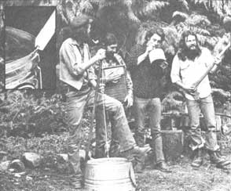

Marc Bristol and other Washington State grassroots musicians wail away on a gutbucket, washboard, and jug (the axe is a gag). For Marc's original homegrown music column-which featured gutbucket, washboard, jug, kazoo, musical saw, and spoons "makin' and playin' "instructions-see MOTHER NO. 50. Inset shows gutbucket "notch and bevel "details .
Even homesteaders need to relax and enjoy themselves from time to time, right? And almost everybody these days wants to cut his or her cost of living. So how about a little do-it-yourself entertainment?
And that's what this column is all about. Down-home music that you can make . . . and the instruments (which, in some cases, you can also make!) to play that music on.
We may also publish some songs, discuss music as a potential home business, run discographies, bibliographies, and/or include whatever other do-it-yourself music topics you'd like to see.
The important thing is that this is a new column. If you like it, write to me and let me know. If you have some ideas for this feature, let me know that. I'm open to any suggestions or information you care to contribute. I'll even try to answer your questions about down-home music . . . but-both for the benefit of all MOTHER's readers and to ease my correspondence load-I'll deal with those questions, whenever possible, here in this column . . . rather than in personal letters.
Address your correspondence-for this column and this column only-to Marc Bristol, 31722 N.E. 180th Place, Duvall, Wash. 98019.
Since most anybody can use a few extra bucks every now and then, I'm going to plunge right in and tell you how you might be able to turn your music hobby into an occasional job ... to finance a pair of new strings, pay for a trip into town, or even cover the rent check once in a while.
However, before you attempt to parlay your pickin' into cold hard cash, It's best to be sure that you've reached the point in your study of music where you feel like sharing it with folks other than close friends and relatives. (Trying to play professionally before your ability is up to the task can be a mighty disheartening experience!) And, once you have enough proficiency at your chosen instrument to perform "in public", you still need to find an audience that's willing to pay to be entertained.
And that's where this issue's column comes in. I've been earning a share of my income by pickin' and singin' for several years, so I can make some suggestions that might just help you find a few of those groups of paying listeners.
I'd like to point out right from the start, though, that I'm not promoting the notion that you can become self-sufficient by playing music. In most cases (the exceptions being mainly tiresome gigs in nightclubs or bars that will support you for a year or so) the only way to actually earn a living from music is to spend a lot of time on the road.
Now, this sort of work could provide an acceptable lifestyle for nomadic individuals who don't mind living in a truck or school bus, but the constant wandering that it requires would be pretty much out of the question for homebodies who prefer to spend time around the home or farmstead. On the other hand, If you already keep your expenses to a minimum-either by growing your own food or owning your home-an occasional "extra" source of income may be all that you need. Either way-whether you hope to become a full-time "pro" or just aim to feed the cookie jar every once in a while-you'll probably have to start at the bottom.
And that starting point, in terms of playin' for pay, is the kind of gig that you don't have to audition for, because you hire yourself . I'm talking, of course, about singin' on the street! There's usually not a whole lot of money in this sort of work. In fact, $20 a day for three or four very strenuous sets Is about the best you should expect . . . unless your act is extremely novel and you happen to be playing during the Christmas season.
Remember, too, that (for some strange reason) It's illegal in many areas to just set yourself up on a corner and play. So- unless you've seen other "street acts" on your intended spot-It's best to check with the police department before you start to perform. Also, many places (Seattle's Pike Place Market and the entire city of San Francisco, for example) require a somewhat expensive "street singer's" license, and I haven't heard of any new permits being granted in the latter city at all.
What you'll be doing, should you decide to try one of these "do it yourself" jobs, is singing and playing your heart out-with your hat, guitar case, or whatever opened invitingly-in the hopes that people will brighten up and salt that container with a little spare change (or even an apple or an orange!).
And don't feel that your unsolicited performance constitutes begging! The world can always use another song, and music on the streets adds a little culture to the otherwise bland and sterile urban environment.
For a variation on the above theme, you could try to "sign up" with a small restaurant, sandwich shop, salad kitchen, or some such ... in exchange for a salary or even just tips and lunch. If you see a likely place that doesn't have a resident minstrel, approach the management with your idea. It would probably be best to begin by offering your services for lunch and a small fee. Then, if the store owner won't agree to that plan, he or she may at least be willing to guarantee a certain figure (again, $10 to $20 is probably as much as you can expect), and promise to make up the difference if your tips don't equal that amount.
Better yet, if you get real tight with a bunch of your homegrown musical friends (and I don't mean after passing the bottle of homebrew around a few times), you might consider looking for work at a local craft carnival or other similar affair. My group has just finished an extended period of playing these festivals, and we closed off the "season" with our annual performance at the Western Washington State Fair. This year, our pay ranged from $7.00 (in tips) and three T-shirts, to $250 for two 45-minute sets.
In order to tackle this type of performance, you should have a good, solid repertoire of at least 20 or 30 songs. The average set, you see, will contain between 10 and 15 numbers (unless you get into long jams with several extended solo breaks). Most craft or county fairs are good for one or two shows, and they usually have enough money to pay you pretty well for your services.
Watch out, though, for the old "we don't have much money left in our budget but the exposure will do you good" routine. That kind of arrangement can only go on for so long before you realize that you're providing a valuable service to the fair's management and receiving nothing (or next to it) in return. Furthermore, if your only goal is to get up and entertain people, there are plenty of more pleasant ways to do it ... If you simply spread the word around.
You (or your band) could also just go ahead and promote your own concert or dance. This idea should work especially well in a rural area, where there often isn't much entertainment available and where grange halls and so forth can usually be rented at reasonable rates. If you "start from scratch" in this way, however, you'll have to plan to advertise. The best (and least expensive) way to do this is to find a graphic artist (perhaps there's even one in your group) and have some simple photocopied posters made up. Remember, though, that these promotional materials should be out where folks can see them at least two weeks before the event, and make sure that the local newspapers and radio stations know about your hoedown, too. Such sources will often give you free publicity . . . if you get the materials to them well in advance of the performance.
Your self-promoted shindig will be a whole lot more likely to succeed if you can avoid competing with other public entertainments . . . such as the "big" movies, local high school dances, and so forth. Foreknowledge of other events isn't always available, however, so you'll have to be ready to just break even-or maybe go into the hole- unless you're able to assure attendance at your concert or dance by selling advance tickets.
On the other hand, the local movie theater can sometimes work for you, too. These businesses are occasionally willing to run a live music show-perhaps at no cost to musician (s)-because of the money that can be made by selling refreshments during the performance. You see, the theater owner would ordinarily have to pay to show a film (and he or she may be having trouble with attendance on week nights), so this sort of symbiotic arrangement could be to that person's advantage.
If you feel that your solo act or group really has something special to offer, why not try for a concert at a small college? Junior colleges have sprung up everywhere over the past few years, and most of 'em offer free entertainment programs (often during lunch hours) to their students. In order to get one of these jobs, however, you may have to put together what's known as a "promo package". This packet would usually contain a photo of you or your group, a tape recording or record of one of your songs, and some sort of glowing description of the kind of music you play. (A poster-which the college could print up and place around the campus-would also be a big help.)
Junior college jobs weren't hard to come by a few years back. Now, however (at least around my area), you have to have your promo kit in the mailbox by the end of the school year in order to get booked for either of the following two semesters. Of course, the community colleges in your locale may not be so "sophisticated" yet.
My original promo package consisted of a "photocopied special" poster, including a couple of pictures and the slogan "Homegrown Mountain Music", as well as a short typed description of the kind of music I play. After a while I had a newspaper clipping to add . . . from the local daily's article about my escapades in a nearby sandwich shop. Even with this crude "kit", I was able to demand $50 for a one-hour performance, and many folks with better packages were getting a good deal more.
Weddings and private parties also offer income possibilities to the home-grown musician. All of the above-mentioned job-finding methods will help you get invited to play at such occasions, and you might also try having some business cards printed. These "pocket posters" won't cost you more than $20 and can be hung in all the places where you see other cards (the ones that advertise bulldozing, horseshoeing, and so forth) tacked up, or just handed out to anyone who expresses an interest in hiring you or your group.
It's unlikely that you'd need your own sound amplifying equipment for most of the jobs that I've mentioned (assuming, of course, that you have an acoustic solo act or group) ... as this paraphernalia either wouldn't be necessary or would be provided by the sponsoring person or organization. Of course, a sound system will definitely expand your performing possibilities, but-unless you're a good and patient "horse trader" or have the electrical know-how to build the equipment yourself-such accessories can involve a considerable expense.
The realm of sound-reinforcement is a whole different ball game from playing music, and I don't have the space here to really go into it. Suffice it to say that- should this equipment become necessary-it's a good idea to keep some money out of each performance to finance the microphones, amps, and so forth. Another workable plan would be to have each member of your group pay for an equal share of the equipment.
You'll notice that I haven't said much about the usual tavern and bar gigs, and that's because I'm just not much interested in those kinds of employment myself. I think that playing for four or five hours in a noisy, smoke-filled place (that doesn't even serve much that interests me) is too much like hard work. If you have a good dance band, though, these places are prime markets for your musical services.
So, if you want to spread the good feelings that you get from music around- either alone or with your pickin' partners-check out a few of the scenes that I've described. The opportunities are there (and more can be created!). Just believe that the world should have more music, and you'll begin to see the places where that need exists.
A lot of folks have written in to say that they'd like to see more homemade instrument instructions. Well, just hang in there, because I've got a couple of do-it-yourself articles in the works, and more still that are in the "idea'' stage.
I'd also like to apologize for not getting my promised list of upcoming music festivals ready in time for this issue. The information is just about ready, though. I'll try to pass it on to you in MOTHER NO. 57.
And please keep your letters comin'! I've picked up a world of information from readers who enjoy this column, and a lot of those tips will be showing up on these pages in the future. 8
|
 INSERT STAFF PHOTO |
|
|